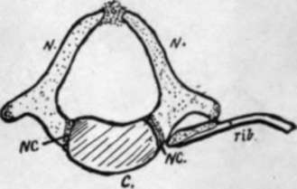
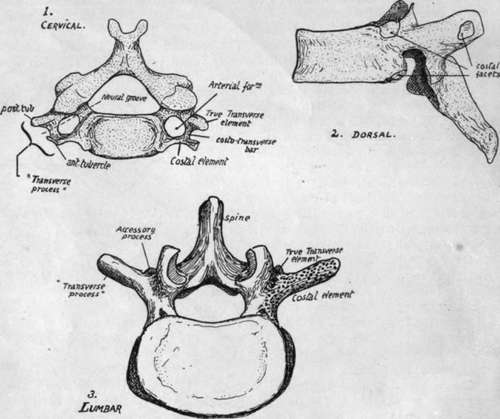

Regions Of The Column
Description
This section is from the book "The Anatomy Of The Human Skeleton", by J. Ernest Frazer. Also available from Amazon: The anatomy of the human skeleton.
Regions Of The Column
The vertebral column is divided into regions in which the vertebrae show characteristic modifications. The most nearly typical region is that which carries the movable libs, and is called dorsal: the dorsal vertebra; are twelve in number.
Above this, in the neck and supporting the skull, are seven cervical vertebrae, while between the dorsal region and the pelvis are five lumbar segments. Below these are five sacral vertebrae, fused together to form the sacrum and firmly fixed between the bony side-walls of the pelvis, and the sacrum rapidly tapers below to give place to the degenerated coccyx: the coccygeal vertebrae are usually four in number. The presacral segments are often termed the " true vertebrae," the sacrum and coccyx being then called " false vertebrae." The column can thus be analysed as follows : 7 Cervical V. j 12 Dorsal V. 124 presacral V. -f- 5 sacral V. + 4 coccygeal V. = 33 V. 5 Lumbar V).
Of the presacral vertebrae, the dorsal form less than half, the lumbar less than a third, and the cervical a fifth or more in the recent column.
Fig. 8.-A dorsal vertebra from a newborn child. N.N. are the two halves of the neural arch, joining the centrum, C, at the neuro-central suture N.C. Observe that the rib only articulates with N. yet the front portion of A', may be included in the descriptive " body".
This is. the usual division, but occasionally exceptions may be encountered : thus there may be twenty-three or twenty-five presacral vertebrae, consequent on forward or backward shifting of the pelvis, and this may be correlated with change in the number of sacral vertebrae, or the sacral may be altered in number without an alteration in the presacral number. Again, the number of dorsal vertebrae may appear to be altered by the occurrence of a rib on the last cervical segment, or on the first lumbar, or by partial suppression of the first or last of its own series, but these are not as a rule really alterations in number, but only in appearance. The coccygeal vertebrae" are inconstant in number, as they are in a state of degeneration, representing the bony skeleton of the tail: in the embryo there are six of these rudiments to be found.
In the various regions the true vertebrae exist under different physical conditions and accordingly exhibit distinguishing modifications/ and the distinction can be even carried so far as to enable the observer to recognise and place the individual vertebrae in their proper order in most cases.
The different groups can be known at once by their distinguishing characters. Thus the cervical vertebrae possess an arterial foramen in their " transverse processes," the dorsal group carry free ribs and therefore present costal facets on their bodies and (in the majority) on their transverse processes, while the lumbar vertebrae have neither loiamen nor facet, but are distinguished by the massive size of their bodies and arches and the thickness and square cut of their spines. In the figure (Fig. 9) these differences are exemplified by drawings of vertebrae from the middle of their respective regions. At the same time it is seen that a costal element must be considered as entering into the composition of most of the vertebrae. This forms a free rib in the dorsal series, but is included in the so-called transverse process in the other regions, and in the sacrum. In the cervical series the costal element forms the front wall of the vertcbiarterial foramen, so that the " transverse process " really is a compound of a true transverse element and a costal element, separated by the foramen and joined by a costo-lransverse bar. In the dorsal region the transverse process is a true one, and not compound, but in the lumbar region it is really a costal process, the true transverse element being reduced and its tip represented by the small accessory process that is visible behind the base of the costal element.
Fig. 9.-Vertebra taken from the three presacral regions to show the characters of these regions. Cervical and lumbar vertebra? seen from above, dorsal from the side.
In the sacrum the different morphological constituents of the bone can also be recognised, as will be pointed out at a later stage.
Before examining the special characters of the individual vertebrae the articulated column should be considered as a whole. The discs account for more than one-fifth of the total length of the column. A striking character of the complete column is the presence of curves : there are four of these in the sagittal plane, convex forward in the cervical and lumbar regions, concave forward in the dorsal and sacral. The dorsal curve is primary, and can be looked on as the persisting curve of the embryonic axis. The sacral curve is referred to as primary also. The other two curves are secondary and compensatory, the cervical bend appearing towards the end of foetal life to enable the head to be raised from the thorax, while the lumbar curve results from the assumption of the upright sitting posture and extension of the legs, therefore appearing after birth. The sharp bend between the lumbar and sacral regions is a modification in the general curve that begins to appear in the second half of intrauterine life.
The primary curves have corresponding differences between the front and back heights of the bodies of their respective vertebrae : in the acquired and compensatory curves the bend is accounted for mainly by corresponding differences in height in the intervertebral discs. This is specially marked in the lumbar convexity, where the curve is altogether -due to the ventral thickness of the discs in lower races : in higher races the sum of the front measurements of the bones is higher than that of the posterior surface of the bodies, so that the curve is not altogether due to the discs. The lumbosacral disc is about two and a half times as thick in front as behind.
Continue to: